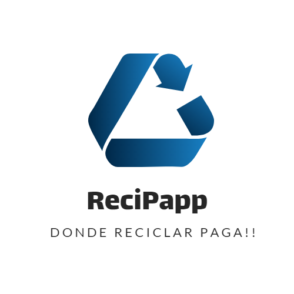

<ion-header>


</ion-header>


<ion-content padding>

  <ion-card>
    
    <ion-card-content>
    </ion-card-content>
  </ion-card>

    <button ion-button full (click)="AbrirPerfil(1)">Generador</button>
    <button ion-button full (click)="AbrirPerfil(2)">Recolector</button>
    <button ion-button full [navPush]="proRecolectorsPage">Procesador</button>
</ion-content>
